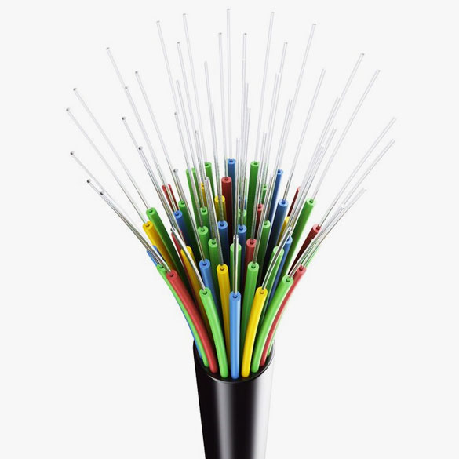

Il cavo di fibra ottica
Il cavo a fibra ottica è un tipo di cavo di trasmissione dati che utilizza fibre di vetro o di plastica sottili e flessibili per trasmettere segnali luminosi al posto di segnali elettrici utilizzati nei cavi tradizionali. Le fibre sono costituite da un nucleo centrale circondato da uno strato di rivestimento protettivo e da una guaina esterna che protegge il cavo dalle interferenze esterne. Il cavo a fibra ottica è in grado di trasmettere segnali a distanze molto lunghe e con una velocità di trasmissione estremamente elevata, fino a diverse centinaia di Gigabit al secondo (Gbps) o addirittura Terabit al secondo (Tbps) a seconda della qualità del cavo. Rispetto ai cavi tradizionali, il cavo a fibra ottica offre una maggiore larghezza di banda e una maggiore immunità alle interferenze elettromagnetiche.
